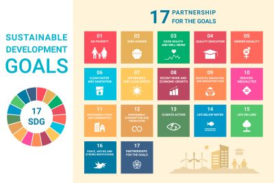

¿Sabías que los proyectos VIP se originaron en el Georgia Tech Institute?
El Programa de Proyectos Integrados Verticalmente (VIP) combina la educación de pregrado y la investigación facultativa en un contexto basado en equipos. Los estudiantes de pregrado VIP obtienen créditos académicos, mientras que los profesores y estudiantes de posgrado se benefician de los esfuerzos de diseño/descubrimiento de sus equipos. El profesor Edward Coyle nos explica más acerca de los VIP en el video.
Cursos VIP disponibles
Experience T-B Women: Join the experience of being a woman
Así se llama este Proyecto VIP liderado por la Dra. Paola Murgas, bioquímica e investigadora del Centro de Biología Integrativa (CIB) U. Mayor, quien explica que este trabajo viene desarrollándose desde el año pasado a partir de dos aristas: por un lado, generar difusión de ciencia hacia niñas en etapa escolar, y por otro, valorar el rol de la mujer en todas las áreas del conocimiento.

Microbiota intestinal y salud humana
Liderado por el Dr. Erick Riquelme, PhD en Ciencias Biológicas e investigador del Centro de Biología Integrativa (CIB), este proyecto busca evaluar el rol que podría jugar la microbiota intestinal en la regulación y el control del estrés por parte de las personas. "Por ejemplo, buscamos establecer si determinadas personas que tienen un nivel de estrés elevado tienen una microbiota distinta que las personas que tienen un nivel de estrés más bajo", sostiene el científico.
Los objetivos de desarrollo sustentable y la universidad: cambio del clima, energía, vejez, discapacidad y genética
Este proyecto VIP lo encabeza el Dr. Sergio Peña, PhD en Derecho y académico del Centro de Investigación en Sociedad y Salud (CISS). Su propósito es que estudiantes de pre y postgrado desarrollen trabajos teóricos y prácticos vinculados a algunos de los Objetivos de Desarrollo Sustentable de Naciones Unidas.